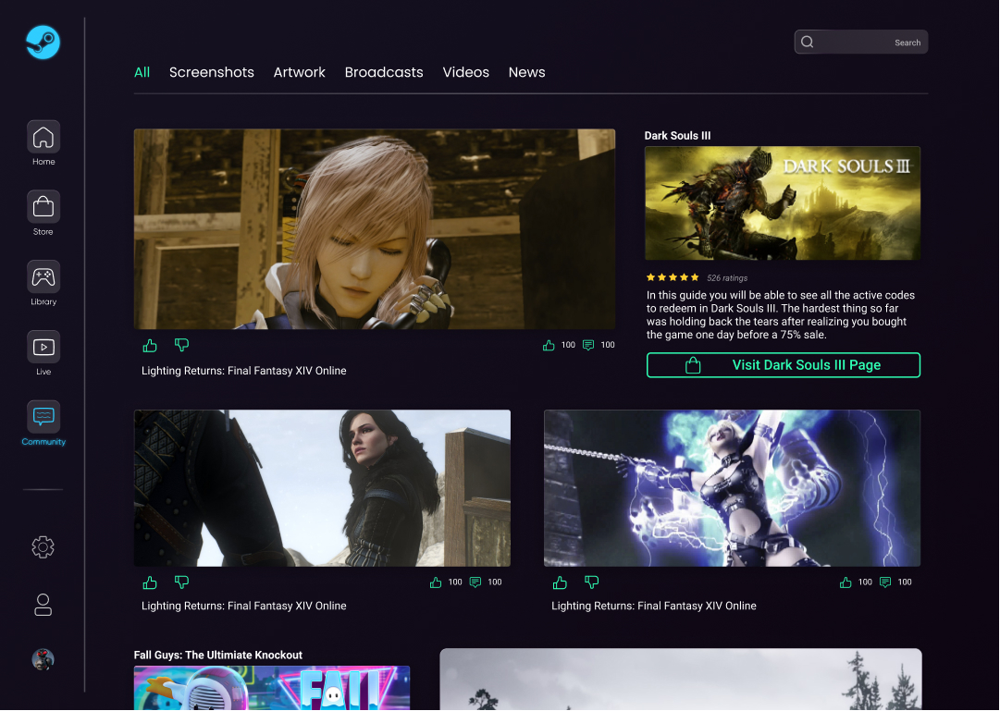
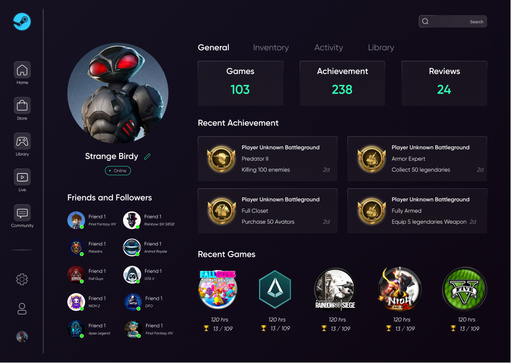

Steam App Design
I have to admit I am a true gamer, from Playstation, Xbox, Switch to PC. I didn’t break my bank to purchase every game on Steam, but I am a senior Steamer. Oftentimes, I feel like the native Steam App isn’t easy enough to use. Number of disadvantages to mention, like information overload, uniform visual level and busy layout. Steam was created in 2003 and reinvented in 2019, but still it lacks today's simplicity. Besides, Steam has grown into a “BIG” platform to provide robust features like community, news and updates and also streaming service. The current appearance is just too much, leaving no room to breathe. A new UI arrangement is long overdue.
Process
Empathize
Research UXUI Problem online (Reddit)
Define
Complicated User Interface & Information Overflow
Ideate
Brainstorming and drafting app structure
Prototype
Putting ideas into working prototype
Test
More at Final Thought
Challenge
There are several UI problems raised by the Steam Community, namely complicated user interface, redundant elements, blurry visual hierarchical arrangement and information overload. Even a Big Picture mode is provided for screen resolution higher than 1080p, but that is working well in terms of design and pixel sharpness.
Goals
This project aims to revamp the app with essential information, easy navigation and adding a modernity.
Idea Transformation
I have thought of prioritizing page elements, hidding or putting away less important elements. No more intrusive promotional window.

Insight 1: Trim down unnecessary information
Oftentimes, there is so much information overloading the app, crowded yet all in the same visual level. Reducing a certain amount of info could help make the page less busy.
Result: Removing and hidding excessive tags like other available languages, game genres and game platform reviews, and leave the essential parts including gallery, game introduction, system requirement and packages. No more intrusive overlay to disturb gamers. Advertising carousel is now in Home after login in.
Insight 2: Leverage better visual hierarchy
Steam app positions almost every element at a similar visual level, making it hard for gamers to find what they are looking for.
Result: Game promotion always includes very bold and characterized images, Steam app should keep itself simple and yet reveal gamer identity. Dark theme paired with a corporate color and a few basic colors will do, helping the game imagery to pop.
Insight 3: Modern Touch with real gaming identity
Steam was created in 2003 and the latest UI update was in 2019. However, the appearance seems busy and lacks a gaming identity.
Result: A modern touch is injected into the Steam App to reinvent the whole appearance. To accomplish this task, fonts and color palette are replaced, together with relayout and white space. Ideally to accommodate sales and boost user numbers.

Instead of intrusive pop-up, big hero carousel are positioned in prominent visual hierarchy. Carousel previews are included for user to check all promotion at a glance.
On the new Home Page, key promotions are now shown in carousel mode with Monthly Highlight. Selected News, New and Upcoming Releases sit just below the promotion area for exposure. Smaller covers, fewer tags and introduction help to keep the page clean and easy to explore. Redirect Banner at the end of the page, encouraging users to visit the store page.

Existing Steam Game page is overloaded and unfortunately they are all positioned at the same visual level. For ease of transaction, only necessary information and brief introduction are presented above the fold. Reviews should be included but hidden underneath. Users can still see them if they want to.
Steam has grown into a very robust app that also includes Live and Community. These extra functions did a good job to keep gamers together. For better user experience, these thumbnails should be kept apart from the Home page in order to boost app performance and create a simple ui.
Personal Profile becomes more image-conscious. It provides more account details, making sharing and new connections easier.
Final Thought
Steam is now one of the leading game distribution platforms, providing so much that one can enjoy. I also am a passionate gamer who loves shopping and playing on Steam. But at this point, I think Steam really should consider revamping and improving UX and UI. Hopefully it will get invented soon and be more user-centric / user friendly.
Prototype testing - Recruiting mainstream and extreme users, gamers and non-gamers in such cases. Assign the same task (for example purchasing a certain game) to them, observe their reaction and how they tackle the tasks. A follow-up interview with users will be carried out to understand their thoughts and difficulties, which should provide insight for the next adjustments.